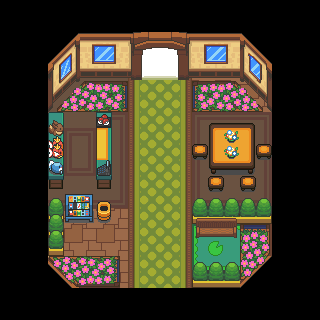
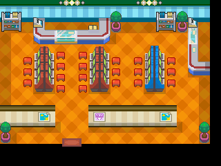
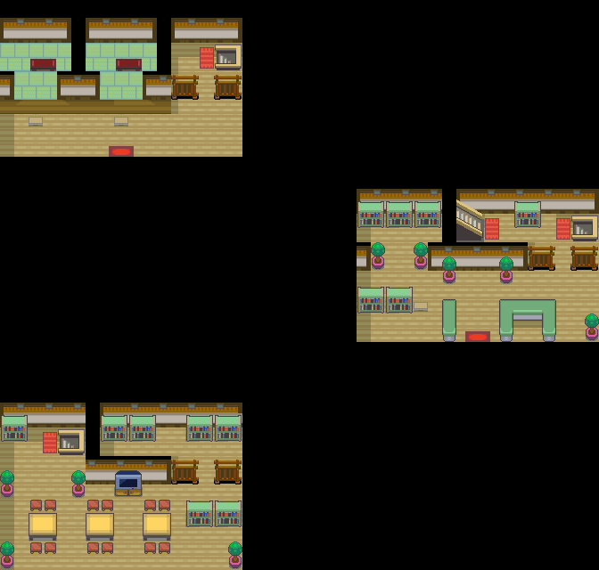

057 遗失的玩偶
一句话目标：帮满金市地下商业街的富家少爷找回他要在缘朱市夏日祭送给女友的玩偶。
接取地点
- 满金市地下商业街（地图 50:8），富家少爷 local 7 在 (9,7)；女友 local 6 在附近 (12,8)。
- 线索地：满金市游戏中心（地图 50:20），柜台接待员 local 7 在 (6,2)。
- 真正的玩偶：满金市商业区（地图 3:76）的垃圾桶 (57,11)。
准备条件
- 与少爷对话触发求助场景需旗标 4246（来源未在本包定位）。
操作步骤
- 在满金市地下商业街 (50:8) 找富家少爷 (9,7) 对话，他担心女友发现、请你帮忙找玩偶；答应后出现「接受任务:<遗失的玩偶>」（旗标 6264）。
- 到满金市游戏中心 (50:20)，向柜台接待员 (6,2) 询问，得到粉色的皮可西玩偶 0282——这是误导玩偶，不是目标。
- 把粉色玩偶拿回给少爷看。他说「……不对，不是这个玩偶啦！」，随后想起曾在商业区长椅上确认过玩偶，判断可能丢在商业区和住宅区的垃圾桶里（旗标 6272），并让你去垃圾桶找。
- 前往商业区 (3:76) 最东北、宝可梦中心右侧高楼旁的窄巷，调查路灯下的垃圾桶 (57,11)（从下方贴近后向北调查）。trash 中取得真正的玩偶——卡比玩偶 0281（旗标 6273）。
- 回地下商业街把卡比玩偶交给少爷，他确认「就是这个玩偶」，交付谢礼（旗标 6274）。
- （后续）在缘朱市（地图 55:33）再遇少爷，触发夏日祭求婚场景，可再得一份谢礼（旗标 2684）。
交付检查
把在商业区垃圾桶 (57,11) 找到的卡比玩偶 0281交给少爷，他确认后任务完成（旗标 6274）。
奖励
容易卡住的位置
- 游戏中心给的皮可西玩偶 0282是误导，直接交给少爷只会得到“不是这个玩偶”的回应。
- 必须先给少爷看过误导玩偶、触发他想起垃圾桶的对白（旗标 6272），垃圾桶才会给出真正的卡比玩偶。
- 垃圾桶需从下方贴近后向北调查才触发（坐标为 (57,11)）。
- 交付时脚本会 removeitem 卡比玩偶 0281×1。
- 本包混入满金游戏城的代币兑换对白，与本任务旗标无关，勿混写。
来源与待补字段
- 来源包：data/quest_packets/057.json。
- 待补：接取场景所需旗标 4246 的来源未在本包定位；垃圾桶脚本 (0x08F34039/0x08F3404C) 属地图 3:76 事件，不在 057.json 包内，已由 maps_research 事件/脚本补足；夏日祭求婚场景的触发旗标 2684 来源未定位。
地点地图
共享RGB底图；点击可缩放定位。数字对应本页相关地点，不代表地图上全部事件。
满金市

1 遗失的玩偶（9,7）
满金市

1 遗失的玩偶（6,2）
满金市·商业区


地图范围记录：当前资料没有精确人物／遭遇坐标。 底图有1个图块缺少原始数据。
缘朱市

地图范围记录：当前资料没有精确人物／遭遇坐标。